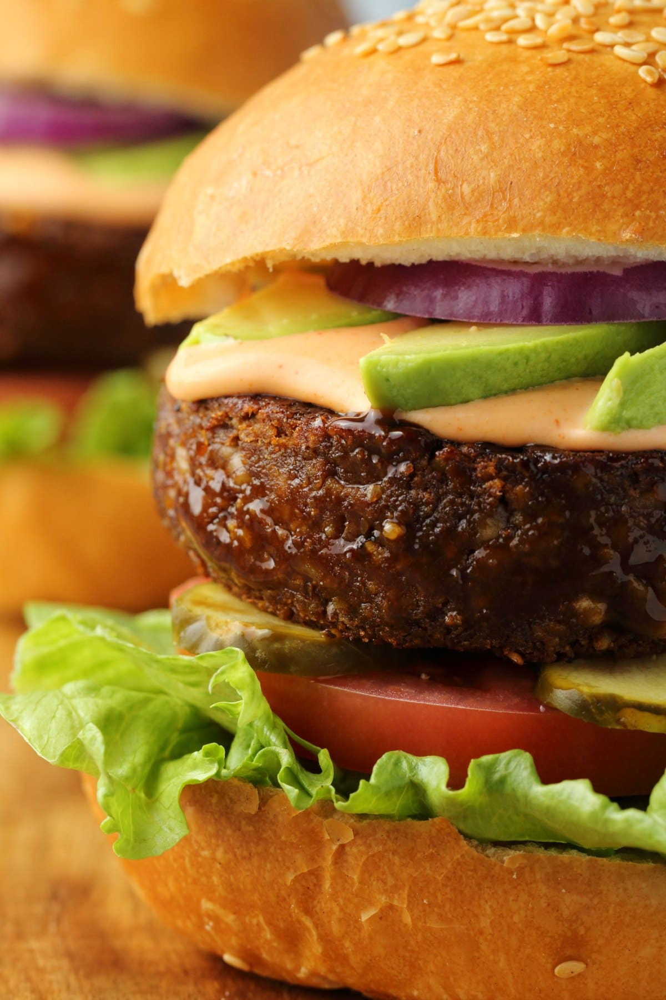

|  |
- 1 cup Walnuts (100g)
- 1 cup Chickpeas (164g) canned, drained well
- 1 Tablespoon Soy Sauce
- 2 Tablespoons Tomato Paste
- 1 Tablespoon Vegan Mayonnaise
- 1 teaspoon Hoisin Sauce
- 1 teaspoon Dijon Mustard
- 1/2 teaspoon Garlic Powder
- 1/2 teaspoon Onion Powder
- 1 teaspoon Salt
- 1/4 teaspoon Ground Black Pepper
- 1/2 teaspoon Smoked Paprika
- 1/8 teaspoon Liquid Smoke
- 1 cup Cooked Couscous (157g) Packed cup
- 1/2cup Vital Wheat Gluten (75g)
|